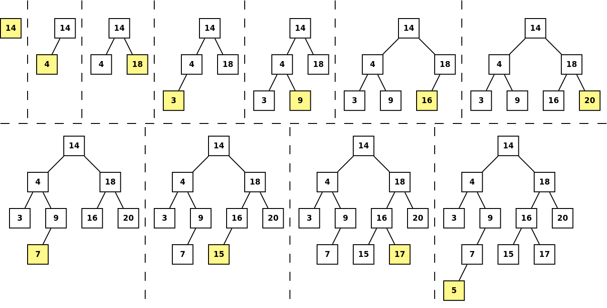

Contam para a nota dos exercícios das aulas e submetem-se no Mooshak até ao prazo. Para ter 100% nesta aula basta resolver os exercícios do guião principal. Se um colega te ajudou de forma direta, indica-o nos comentários do programa.
ED208 40 %ED164 40 %ED172 40 %ED209 40 %ED210 40 %ED165 40 %Verifique o código seguinte que implementa uma Árvore Binária de Pesquisa. Note que o valor do tipo T guardado pelo BSTNode tem de ser comparável, ou seja, implementa o interface Comparable.
Neste exercício, para compilar o código de árvores binárias de pesquisa irá necessitar das classes (e interfaces) DNode, DoublyLinkedList, LinkedListQueue, LinkedListStack, MyQueue, MyStack abordadas na aula prática 7.
Nó da árvore binária de pesquisa
Árvore binária de pesquisa
Exemplo de teste das árvores binárias de pesquisa
Execute a classe de teste das árvores binárias de pesquisa:
Espreite e acompanhe a implementação do método insert da classe BSTree. Relembre que numa árvore binária de pesquisa, para um qualquer nó, todos os elementos da subárvore esquerda são menores e todos os elementos da subárvore direita são maiores. Para o ajudar a compreender, a demonstração seguinte insere os valores um a um e mostra o caminho que cada um percorre desde a raiz:

remove da classe BSTree para verificar como isto é feito.Procure desenhar no seu caderno como ficaria uma árvore binária de pesquisa depois de inserir os seguintes elementos (por esta ordem): 4 8 1 3 9 2 7 6.
Depois de desenhar, siga as inserções no widget abaixo para verificar se acertou no desenho da árvore (com as previsões ligadas, ele pergunta para que lado vai cada valor). No fim, o widget remove a raiz 4: quem fica no seu lugar?
Depois das inserções, a raiz é 4; filhos de 4: 1 e 8; filho direito de 1: 3, com filho esquerdo 2; filhos de 8: 7 e 9; filho esquerdo de 7: 6. Ao remover 4, o sucessor 6 (o mínimo da subárvore direita) passa para a raiz. Em ordem: 1 2 3 6 7 8 9.
Também pode usar a visualização de árvores binárias de pesquisa da Universidade de São Francisco.
Experimente retirar e inserir mais alguns elementos, procurando primeiro confirmar como ficaria a árvore, e depois usando a página para confirmar o que previu.
Neste exercício vai poder garantir que percebe como internamente a árvore binária de pesquisa está organizada.
Resolva o problema [ED208] Mínimo e máximo (também disponível no Mooshak).
Uma árvore binária de pesquisa mapeia muito bem num TAD conjunto. Este exercício pede-lhe precisamente para resolver de forma simples um pequeno problema que na sua essência pode ser resolvido pensando em conjuntos.
Resolva o problema [ED164] Quantas palavras? (também disponível no Mooshak).
insert()). Os elementos iguais são descartados. Para ler palavras pode usar o método next() da classe Scanner.numberNodes()).Um TAD dicionário (também conhecido como mapa ou array associativo) é uma estrutura de dados que guarda pares (chave,valor), associando a cada chave um determinado valor. Uma implementação possível é precisamente usar uma árvore binária de pesquisa que usa a chave para decidir a posição na árvore (garantindo que só existe uma cópia de cada chave).
Verifique o código seguinte que implementa um dicionário de pares (chave,valor) usando árvores binárias de pesquisa (ex. métodos: put, get e keys).
Espreite a classe BSTMapNode para ver como o nó está implementado; note que o tipo K (a chave) é comparável, mas o tipo V (o valor) não.
Nó da árvore
Dicionário
Exemplo de teste dos dicionários
Execute a classe de teste dos dicionários:
Espreite e acompanhe a implementação do método put da classe BSTMap, muito semelhante ao insert de uma árvore binária de pesquisa normal. Note também a assinatura dos principais métodos e o que fazem (get, put, remove e keys). Veja também como são percorridas as chaves do mapa (que são devolvidas numa lista ligada de Java java.util.LinkedList). De um modo geral, quando temos algo iterável no Java, podemos usar a sintaxe for-each:
Um exemplo seria algo como:
Resolva o problema [ED172] Contagem de palavras (também disponível no Mooshak).
<String,Integer>.hasNext() (para saber se ainda existem palavras para ler) e next() (para ler a próxima palavra).get()), então colocá-la no dicionário com valor igual a 1 (usar método put()).get() para ler o valor e depois método put() para atualizar o valor).keys()) usando um for-each e imprimir os valores. Como é uma árvore binária de pesquisa e o keys é feito inorder, as chaves já vêm por ordem alfabética.Para consolidar os seus conhecimentos sobre como percorrer internamente uma árvore de pesquisa, resolva o seguinte problema (também disponível no Mooshak):
x.compareTo(a) e x.compareTo(b)?Para garantir que percebe as condições necessárias para uma árvore binária ser de pesquisa, resolva o seguinte problema (também disponível no Mooshak):
Para consolidar os seus conhecimentos sobre o uso de árvores binárias de pesquisa como TAD conjunto, resolva o seguinte problema (também disponível no Mooshak):
insert()). Note que as somas iguais a anteriores são descartadas (a árvore guarda apenas uma cópia de cada número).contains()).DCC/FCUP · Última atualização do original: 27/11/2025